Authentication with LDAP¶
This tutorial introduces GeoServer LDAP support and walks through the process of setting up authentication against an LDAP server.
Note
Read more about the LDAP authentication provider.
LDAP server setup¶
A mock LDAP server will be used for this tutorial. Download and run the acme-ldap jar:
java -jar acme-ldap.jar
The output of which should look like the following:
Directory contents:
ou=people,dc=acme,dc=org
uid=bob,ou=people,dc=acme,dc=org
uid=alice,ou=people,dc=acme,dc=org
uid=bill,ou=people,dc=acme,dc=org
ou=groups,dc=acme,dc=org
cn=user,ou=groups,dc=acme,dc=org
member: uid=bob,ou=people,dc=acme,dc=org
member: uid=alice,ou=people,dc=acme,dc=org
cn=admin,ou=groups,dc=acme,dc=org
member: uid=bill,ou=people,dc=acme,dc=org
Server running on port 10389
The following diagram illustrates the hierarchy of this LDAP datatabse:
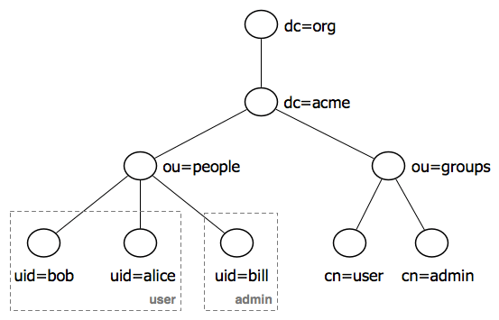Diagram of custom LDAP
The LDAP tree consists of:
- The root domain component, dc=acme,dc=org
- Two organizational units named people and groups
- Two groups named user and admin
- Two users named bob and alice who are members of the user group
- One user named bill who is a member of the admin group
Configure the LDAP authentication provider¶
Start GeoServer and login to the web admin interface as the admin user.
Click the Authentication link located under the Security section of the navigation sidebar.
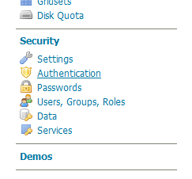Click to bring up the Authentication settings page
Scroll down to the Authentication Providers panel and click the Add new link.
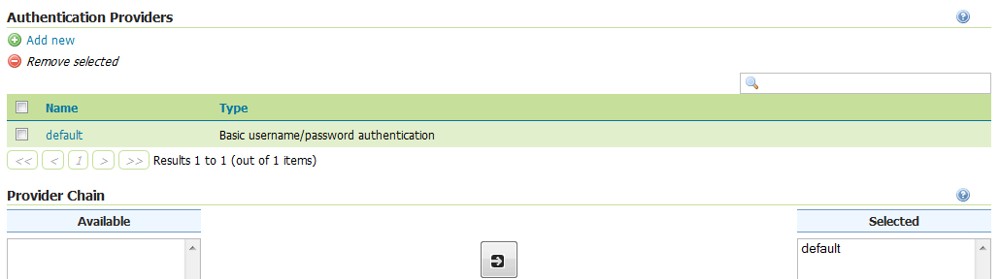Click to create a new authentication provider
Click the LDAP link.
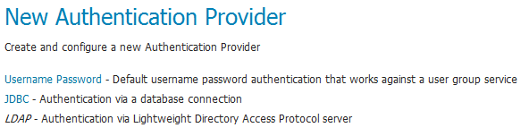Selecting a new LDAP authentication provider
Fill in the form as follows:
Field
Description
Name
acme-ldap
Server URL
ldap://localhost:10389/dc=acme,dc=org
User lookup pattern
uid={0},ou=people
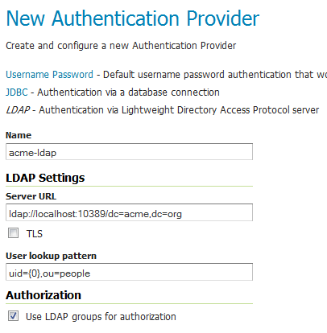Configuring an LDAP authentication provider
Test the LDAP connection by entering the user name bob and password secret in the connection test form located on the right side of the page and clicking the Test Connection button. A successful connection should be reported at the top of the page.
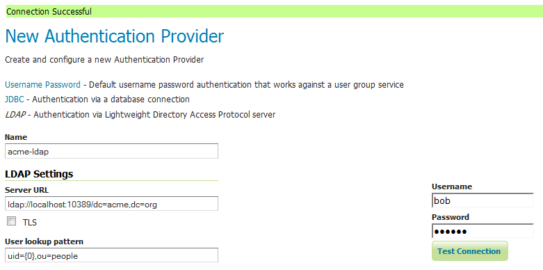Testing the connection to the LDAP connection
Click Save.
Back on the authentication page, scroll down to the Provider Chain panel and click the right-arrow button to move the acme-ldap provider from Available to Selected.
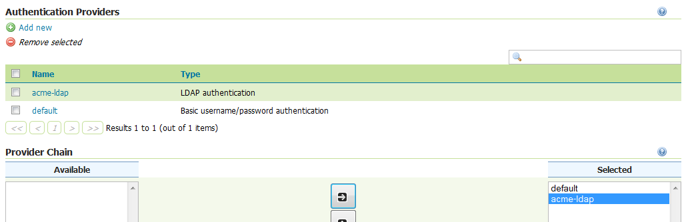Activating the LDAP authentication provider
Click Save.
Test the LDAP login¶
Log out of the admin account.
Login as the user bob with the with the password secret.
Logging in as user “bob”
Successfully logged in
While the connection was successful, logging in as “bob” doesn’t yield any administrative functionality because the account has not been mapped to the administrator role. In the next section GeoServer will be configured to map groups from the LDAP database to roles.
Map LDAP groups to GeoServer roles¶
When using LDAP for authentication, GeoServer maps LDAP groups to GeoServer roles by prefixing the group name with ROLE_ and converting the result to uppercase. For example “bob” and “alice” are members of the user group, so they would be assigned a role named ROLE_USER. Similarly “bill” is a member of the admin group, so he would be assigned a role named ROLE_ADMIN.
Log out and log back in as the admin user.
Navigate to the Authentication page as before.
Scroll to the Authentication Providers panel and click the acme-ldap link.
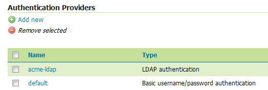Click to access the LDAP connection settings
Fill in the following form fields:
Field
Description
Group search base
ou=groups
Group search filter
member={0}
The first field specifies the node of the LDAP directory tree at which groups are located. In this case the organizational unit named groups. The second field specifies the LDAP query filter to use in order to locate those groups that a specific user is a member of. The {0} is a placeholder which is replaced with the UID of the user.
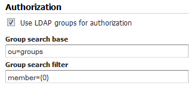Mapping LDAP groups to GeoServer roles
Click Save.
Map a GeoServer role to the administrator role¶
At this point the LDAP provider will populate an authenticated user with roles based on the groups the user is a member of. However, the GeoServer administrative role is named ROLE_ADMINISTRATOR, not ROLE_ADMIN, so “bill” who is assigned the role ROLE_ADMIN will not be granted administrative rights. To remedy this, the GeoServer role service will be reconfigured to treat ROLE_ADMIN as an administrative role.
Click the Users, Groups, Roles link located under the Security section of the navigation sidebar.
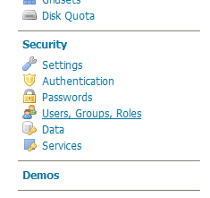Click to bring up the Users, Groups, and Roles settings page
Click the default role service in the Role Services` panel.
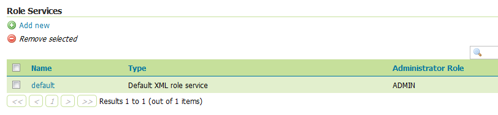Click to edit the settings of the default role service
Click the Roles tab.
Click Add new role.
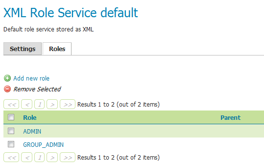Click to add a new role
Enter ROLE_ADMIN in the Name field. Leave the other fields as-is.
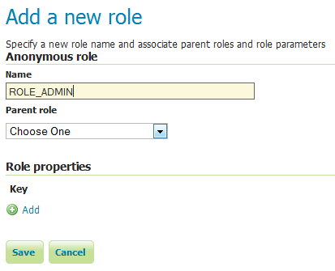Creating a new role
Click Save.
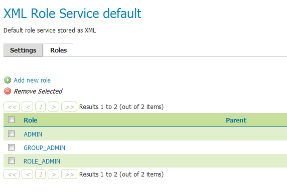New role successfully created
Click the Settings tab.
Select ROLE_ADMIN in the Administrator role box.
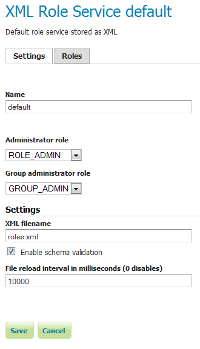Setting the admin role
Click Save.
At this point members of the admin LDAP group (in this case, the user “bill”) should be given full administrative privileges once authenticated. Log out of the admin account and log in as “bill” with the password “hello”. Once logged in full administrative functionality should be available.